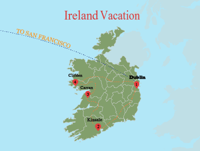

Lab 1
{kind=link}
Ireland Vacation
This is a map of my professor's trip to IrelandDownload Image
This is a website to show a collection of maps that I have worked on throughout the course of my undergraduate career. I am a Senior at Humboldt State University. My major is Environmental Studies with a focus on Geospatial Analysis and a minor in English, teaching a second language. I hope you find inspiration and enjoy what I have to offer.
This is a map of my professor's trip to IrelandDownload Image
A map of the 48 contiguous US States and their Capitals. Using a four color theorem, elementary students may find learning the States of America easy and fun!Download Image

A reference map of features and places in North America. This map was designed for an audience of the general public.
A few added features are (in no specific order):
1) Grand Canyon
2) Atlantic and Gulf Coastal Plains
3) Canada
4) Mexico
5) Cape Blanco
6) Cape Flattery
7) Delaware Bay
8) Snake River
9) The Bahamas
10) Florida Straits
11) Natucket Island
12) Bay of Fundy
13) Platte River
14) Mount Rainier
15) Edwards Plateau
16) Great Lakes
17) Cuba
18) Tampa Bay
19) Gila River
20) Greater AntillesDownload Image

This Triadic City Map was made for an audience of urban residents in Portland, Oregon. This is a fun map made to show St. Mary's Cathedral, a bookshop, various museums, and cafes around town. The map also shows the many Deciduous Magnolia trees in town. The map was initially inspired by Rebecca Solnit's map of homicide victims and Monterrey cypress trees in San Francisco. It showed the distribution of two unrelated things and how it may tell a story about a city. The features of the map uses a triadic color scheme on a muted background. The tools used were ArcGIC and Adobe Illustrator. Download Image
The basemap was created at mapstack.stamen.com. The purpose of this lab is to learn how to play around with layers to create our own basemap, a basemap that is in accordance to our desired features. The features presented on the map are 6 beer breweries from Fortuna to Mckinleyville. The target audience is for anyone reading a local magazine or at a print publication. Download Image

Describe some aspects of the map here. Download Image
Describe some aspects of the map here. Download Image
Describe some aspects of the map here. Download Image
Describe some aspects of the map here. Download Image
Describe some aspects of the map here. Download Image
Environmental Studies; Geospatial Analysis English: Teaching a Second Language
Drop me a line
{kind=link}
{kind=link}